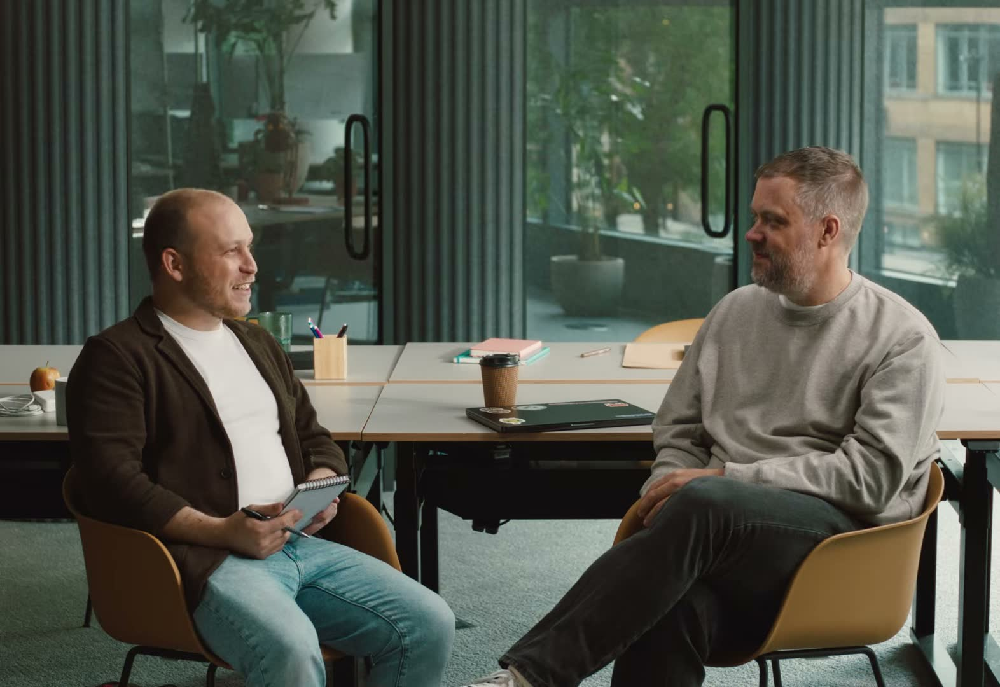
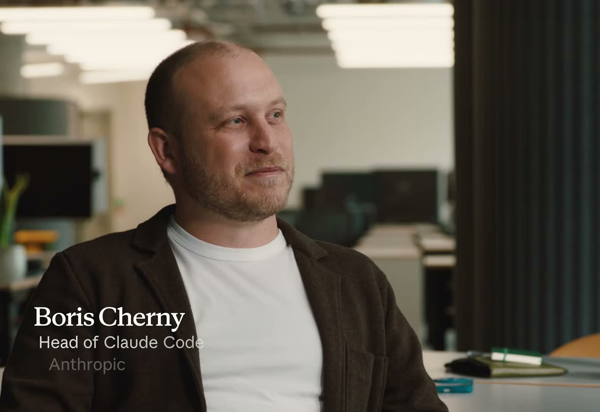
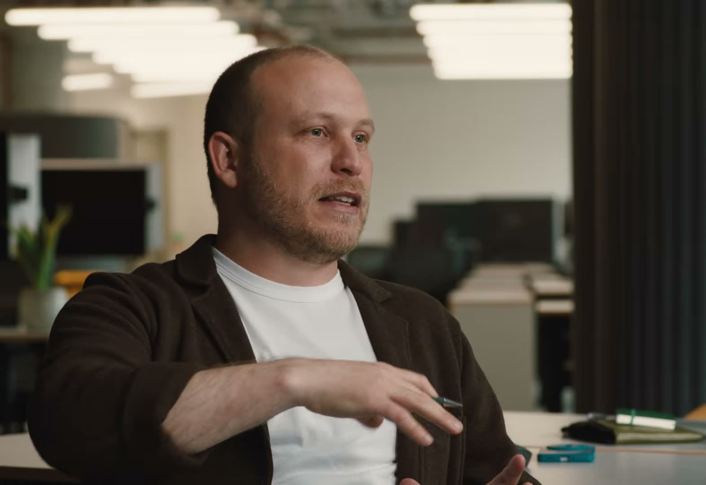

Anthropic의 Claude Code 총괄 보리스 체르니(Boris Cherny)가 진행하는 Office Hours 대담에, Spotify의 수석 아키텍트 겸 엔지니어링 부사장 니클라스 구스타브손(Niklas Gustavsson)이 나왔다. 주제는 하나다. 2,000만 줄이 넘는 모노레포를 굴리는 회사가, AI 에이전트를 실제 프로덕션에 어떻게 녹여 넣었는가.
이 글은 영상의 흐름을 한국어로 정리한 것이다. 화면은 대부분 두 사람의 대담 장면이라 별도의 슬라이드나 도표는 없다. 대신 핵심 발언은 원문(영어)과 한국어 옮김을 함께 붙였다.

니클라스는 30년 경력의 엔지니어다. 그런 그가 "몇 달 안에 IDE(통합 개발 환경)가 사라질 것"이라는 말을 처음 들었을 땐 믿지 않았다고 한다. 그런데 정작 두 달 뒤, 자신이 더 이상 IDE를 쓰지 않고 있다는 걸 깨달았다.
I found myself not using an IDE anymore어느새 나는 더 이상 IDE를 쓰지 않고 있었다. (00:32 무렵)
전환점은 2023년 후반, 더 강력한 모델들이 나오면서 찾아왔다. 그전까지 AI 코딩은 '똑똑한 자동완성' 수준이었다. 이제는 실제로 복잡한 문제를 통째로 던져도 풀어냈고, 프롬프트를 정교하게 다듬는 수고도 크게 줄었다.
something that I could actually throw real problems at이제는 진짜 문제를 그냥 던져도 되는 대상이 됐다. (02:37 무렵)

니클라스의 현재 작업 방식은 이렇다. 터미널에 여러 개의 Claude 세션을 격자(matrix)처럼 띄워 두고 동시에 굴린다. 2,000만 줄이 넘는 모노레포를 인덱싱하는 게 가능할지 처음엔 의심했지만, 실제로는 모델이 놀라울 만큼 잘 다뤘다고 한다.
5~6년 전, Spotify는 한 가지 문제를 발견했다. 코드베이스가 엔지니어 수보다 7배 빠르게 커지고 있었다. 사람을 아무리 뽑아도 유지보수 부담을 따라잡을 수 없다는 뜻이었다.
our codebase was growing much, much faster than the number of engineers우리 코드베이스는 엔지니어 수보다 훨씬, 훨씬 빠르게 커지고 있었다. (05:29 무렵)
그래서 만든 것이 Fleet Management였다. 수천 개 저장소에 걸친 반복적인 마이그레이션 작업을 자동화하는 도구다. 처음엔 결정론적(deterministic) 스크립트로 짰다. 그런데 이 방식이 점점 벽에 부딪혔다. 단순한 API 변경 하나를 처리하는 데도 수천 줄짜리 스크립트가 필요해질 만큼, 현대 코드의 API 표면(surface)이 거대했기 때문이다.
LLM은 바로 이 '거대한 API 표면'을 훨씬 우아하게 다뤘다. 여기서 나온 것이 내부 도구 Honk다. 현재의 Honk v2는 Claude Agent SDK 위에 만들어졌다. 엔지니어가 OAuth로 자기 도구를 직접 붙일 수 있고, Linux와 macOS 양쪽에서 CI 빌드를 돌린다. iOS 개발에는 macOS 빌드가 필수라 이 점이 중요하다.
초기 Honk에는 결과물을 검증하는 별도의 '심판(judge)' 모델이 있었다. 그런데 주력 모델의 성능이 좋아지자, 이 심판 단계를 아예 없애는 것이 오히려 나은 선택이 됐다. 결과는 극적이었다.
roughly like 20 30 percent success rate on PRs to like 80 percentPR 성공률이 대략 20~30%에서 80% 수준으로 올랐다. (10:20 무렵)
여기서 보리스는 흔한 오해 하나를 짚는다. '속도냐 품질이냐'는 거짓 이분법이라는 것이다. 속도는 품질 관행을 자동화하는 데서 나온다. Spotify는 모든 PR을 팀이 일일이 손으로 확인하던 방식에서, 탄탄한 테스트 자동화를 바탕으로 AI가 만든 변경 대부분을 자동 병합(auto-merge)하는 쪽으로 옮겨 갔다.

productivity is always about investing in infrastructure. It's not about working more hours.생산성은 언제나 인프라에 투자하는 문제다. 더 오래 일하는 문제가 아니다. (14:23 무렵)
Spotify가 체감한 효과는 구체적이다. PR 빈도가 75% 이상 개선됐고, 전체 PR의 약 73%가 AI가 작성한 것으로 집계된다.
엔지니어링 리더를 향한 니클라스의 조언은 의외로 기본기에 관한 것이다. AI 시대에는 '멀쩡한(sane) 엔지니어링 관행' — 표준화, 일관된 코드베이스, 팀 정렬 — 이 오히려 더 중요해진다. 일관성이 높을수록 에이전트가 더 잘 동작하기 때문이다. 표준화 투자를 무시하지 말라는 것이다.
마지막 주제는 프로토타이핑의 민주화다. Spotify에는 프로토타입을 위한 사내 '앱 스토어'가 있다. 엔지니어가 아니어도 — 심지어 공동 CEO까지 — 자연어로 아이디어를 말해 몇 주가 아니라 몇 시간 만에 동작하는 모바일 앱을 만들고, 이 앱 스토어에서 서로 공유한다.
we have an internal app store for those prototypes where you can share them그 프로토타입들을 공유할 수 있는 사내 앱 스토어가 있다. (16:25 무렵)